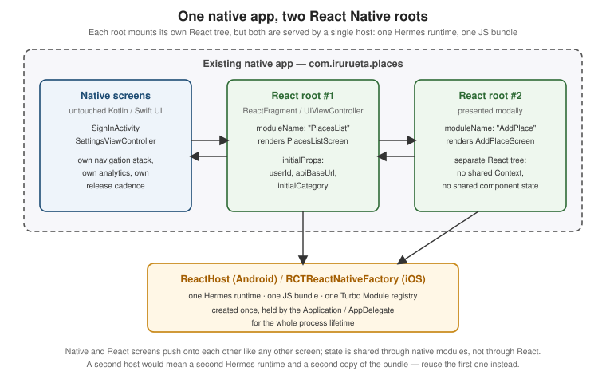

Brownfield Integration
|
This content was generated with the assistance of AI and should be verified against the official documentation before being relied on in production; see the section bibliography for the reference material consulted while preparing these pages. |
Every page so far has assumed a greenfield app: Places was created with npx create-expo-app@latest, React
Native owns the whole process, and the ios/ and android/ folders exist only to host it. Most React Native
adoption in real organisations does not look like that. There is already a shipping Android app and a shipping
iOS app, written in Kotlin and Swift by teams who are not going to stop shipping while a rewrite happens, and
the question is never "React Native or native?" but "can one feature — the places list, say — be written once
and dropped into both apps without disturbing anything else?". That is brownfield integration: React Native
as a guest inside a native host, rendering into a fragment or a view controller that the host owns, alongside
screens that know nothing about JavaScript.
This page covers the mechanics of being that guest on both platforms, using the same canonical Places
codebase: src/features/places/screens/PlacesListScreen.tsx becomes a screen that an existing
SettingsActivity-era Android app and an existing UINavigationController-based iOS app can both push. The
baseline is React Native 0.87 with React 19.2, the New Architecture (the only architecture as of 0.87), Hermes
V1, the Strict TypeScript API, and Expo SDK 57. On iOS, CocoaPods remains the default dependency manager at
0.87 and Swift Package Manager support is still experimental, which matters more in a brownfield app than in a
greenfield one, because the host app’s existing dependency manager is rarely negotiable.
Two neighbouring pages carry the parts this one deliberately does not repeat: Native Modules and Components is where the actual mechanics of calling native code from JavaScript and pushing events the other way live — Turbo Native Modules, Codegen, event emitters, Fabric Native Components — and this page links to it rather than re-explaining any of it; React Native Architecture Under the Hood explains what a "host" actually owns (the Hermes runtime, the Fabric shadow tree, the Turbo Module registry), which is exactly the thing a brownfield app has to instantiate by hand instead of getting for free from the template.
What "Brownfield" Actually Changes
In a greenfield app the React Native template gives you a MainActivity/MainApplication pair on Android and
an AppDelegate on iOS that already create the host, already point at Metro in debug and at the packaged
bundle in release, and already autolink every library. A brownfield app has none of that, and adopting React
Native means writing those pieces yourself into an app whose entry points already exist and already do other
work.
| Concern | Greenfield | Brownfield |
|---|---|---|
Who owns the process entry point |
The generated |
The app’s own |
Who owns the screen |
|
An existing activity or view controller hosts the React root as one view among many, usually inside an existing toolbar, tab bar, or navigation stack |
Where the JS bundle comes from |
The template’s debug/release switch |
The same switch, written by hand, and complicated by the host app’s existing build variants and schemes
( |
Dependency management |
|
The host app’s existing CocoaPods, Swift Package Manager, or Gradle setup, which React Native must join rather than replace |
Navigation |
One React Navigation tree for the whole app |
Two trees — the native one and the React one — that have to hand control back and forth without either losing its back stack |
Upgrades |
|
The Upgrade Helper diffs a template app against itself; in a brownfield app each native-side change has to be read and applied by hand |
The payoff is that adoption becomes incremental and reversible. One screen ships as React Native; if it works, the next one follows; if it does not, the native screen is still there and the fragment is deleted. Nothing in this page requires the host app to commit to a rewrite.
Adding React Native to an Existing Android App
The JavaScript Side First
React Native’s Android integration is driven from a package.json that lives above the Android project, not
inside it. In a typical brownfield repository the native app sits in android/ (or in its own repository
entirely), and the React Native code is added as a sibling:
places-android/ # the existing app, unchanged in structure
app/
build.gradle.kts
src/main/java/com/irurueta/places/...
settings.gradle.kts
gradle.properties
package.json # new: React Native dependencies and scripts
index.js # new: the AppRegistry entry point
metro.config.js
tsconfig.json
src/ # new: the canonical Places source layout
app/App.tsx
navigation/RootNavigator.tsx
features/places/screens/PlacesListScreen.tsx
...index.js is where the brownfield app differs most visibly from the greenfield one: instead of registering a
single root component that owns the whole app, it registers one component per native entry point, each under
the name the native side will ask for:
// index.js -- the brownfield entry point
import { AppRegistry } from 'react-native';
import { PlacesListRoot } from './src/app/PlacesListRoot';
import { AddPlaceRoot } from './src/app/AddPlaceRoot';
AppRegistry.registerComponent('PlacesList', () => PlacesListRoot);
AppRegistry.registerComponent('AddPlace', () => AddPlaceRoot);Each root component is a thin wrapper that supplies the providers src/app/App.tsx would normally supply — the TanStack Query client, the ThemeProvider from src/theme/ThemeProvider.tsx, the safe-area provider — around the screen the native host actually wants, and that reads the initial props the host passed in:
// src/app/PlacesListRoot.tsx
import { QueryClient, QueryClientProvider } from '@tanstack/react-query';
import { SafeAreaProvider } from 'react-native-safe-area-context';
import { ThemeProvider } from '../theme/ThemeProvider';
import { PlacesListScreen } from '../features/places/screens/PlacesListScreen';
import type { PlaceCategory } from '../features/places/types';
const queryClient = new QueryClient();
export interface PlacesListRootProps {
userId: string;
apiBaseUrl: string;
initialCategory?: PlaceCategory;
}
export function PlacesListRoot({ userId, apiBaseUrl, initialCategory }: PlacesListRootProps) {
return (
<SafeAreaProvider>
<QueryClientProvider client={queryClient}>
<ThemeProvider>
<PlacesListScreen userId={userId} apiBaseUrl={apiBaseUrl} initialCategory={initialCategory} />
</ThemeProvider>
</QueryClientProvider>
</SafeAreaProvider>
);
}Note what is not here: no NavigationContainer, no RootNavigator. A brownfield root that is pushed by the
native navigation stack usually should not bring a second navigator with it — the section on sharing
navigation between native and React screens, below, covers the case where it should.
Gradle Setup and the React Native Gradle Plugin
The React Native Gradle plugin ships inside node_modules/@react-native/gradle-plugin and is wired in through
a composite build in settings.gradle, which is also where autolinking runs. In a brownfield app the paths are
relative to wherever node_modules ended up:
// settings.gradle (or settings.gradle.kts, adjusted for Kotlin syntax)
pluginManagement {
includeBuild("../node_modules/@react-native/gradle-plugin")
}
plugins {
id("com.facebook.react.settings")
}
extensions.configure(com.facebook.react.ReactSettingsExtension) { ex ->
ex.autolinkLibrariesFromCommand()
}
rootProject.name = "places-android"
include ':app'The root build.gradle applies the plugin marker so that every subproject can see React Native’s versions, and
the app module applies the plugin itself and declares the two artifacts that matter:
// build.gradle (root)
plugins {
id("com.facebook.react.rootproject")
}// app/build.gradle
apply plugin: "com.android.application"
apply plugin: "com.facebook.react"
react {
// Autolink every React Native library found in package.json into this module.
autolinkLibrariesWithApp()
// Where the JS project lives, relative to this module.
root = file("../../")
entryFile = file("../../index.js")
}
android {
// ... the host app's existing configuration, untouched ...
buildFeatures {
buildConfig = true
}
}
dependencies {
implementation("com.facebook.react:react-android")
implementation("com.facebook.react:hermes-android")
// ... the host app's existing dependencies ...
}com.facebook.react:react-android and com.facebook.react:hermes-android are declared without versions
because the plugin resolves them from the react-native version in package.json, which keeps the native and
JavaScript halves from drifting apart. Three gradle.properties flags complete the setup:
# gradle.properties
newArchEnabled=true
hermesEnabled=true
reactNativeArchitectures=armeabi-v7a,arm64-v8a,x86,x86_64newArchEnabled=true is the only supported value at 0.87 — the legacy architecture was removed, so a
brownfield app that still has newArchEnabled=false sitting in a properties file from an older integration
will not build. hermesEnabled=true selects Hermes V1 as the JavaScript engine, covered in
The JavaScript Runtime and Hermes.
reactNativeArchitectures is worth trimming during development — building four ABIs of the native libraries
is the single slowest part of a brownfield Android build.
The host app also needs android.permission.INTERNET in its manifest to talk to Metro (and to the Places
backend), and, for the development build only, cleartext traffic to localhost plus the dev-menu activity:
<!-- app/src/debug/AndroidManifest.xml -->
<manifest xmlns:android="http://schemas.android.com/apk/res/android">
<uses-permission android:name="android.permission.INTERNET" />
<application android:usesCleartextTraffic="true" tools:targetApi="28">
<activity android:name="com.facebook.react.devsupport.DevSettingsActivity"
android:exported="false" />
</application>
</manifest>Keeping that file under src/debug/ rather than src/main/ is the point: a release build of the host app
should not ship cleartext permission or the dev-settings activity just because it embeds React Native.
Creating the Host: ReactApplication and ReactHost
Under the New Architecture the object that owns the runtime is ReactHost. It is created once, from the app’s
Application subclass, and lives for the whole process. The host app’s existing Application class implements
ReactApplication and adds React Native’s initialisation after whatever it already does:
// app/src/main/java/com/irurueta/places/PlacesApplication.kt
package com.irurueta.places
import android.app.Application
import com.facebook.react.ReactApplication
import com.facebook.react.ReactHost
import com.facebook.react.ReactNativeHost
import com.facebook.react.ReactPackage
import com.facebook.react.defaults.DefaultNewArchitectureEntryPoint
import com.facebook.react.defaults.DefaultReactHost.getDefaultReactHost
import com.facebook.react.defaults.DefaultReactNativeHost
import com.facebook.soloader.SoLoader
import com.facebook.react.soloader.OpenSourceMergedSoMapping
class PlacesApplication : Application(), ReactApplication {
override val reactNativeHost: ReactNativeHost =
object : DefaultReactNativeHost(this) {
override fun getPackages(): List<ReactPackage> =
// Autolinked packages, plus the app's own HapticTapPackage.
PackageList(this@PlacesApplication).packages.apply {
add(HapticTapPackage())
}
override fun getJSMainModuleName(): String = "index"
override fun getUseDeveloperSupport(): Boolean = BuildConfig.DEBUG
override val isNewArchEnabled: Boolean = true
override val isHermesEnabled: Boolean = true
}
override val reactHost: ReactHost
get() = getDefaultReactHost(applicationContext, reactNativeHost)
override fun onCreate() {
super.onCreate()
// Whatever the host app already did here -- Timber, Firebase, Koin/Hilt -- stays first.
initExistingAnalytics()
initExistingCrashReporting()
// React Native's own initialisation, added at the end.
SoLoader.init(this, OpenSourceMergedSoMapping)
DefaultNewArchitectureEntryPoint.load()
}
}SoLoader.init must run before any React Native class touches a native library, and getDefaultReactHost
must be handed the application context rather than an activity context, or the host will outlive the context
it holds and leak the activity. Nothing else in onCreate has to move.
Embedding PlacesListScreen as a ReactFragment
There are three ways for an Android host to render a React root, in descending order of how much of the screen React Native takes over:
| Approach | What it gives you | When it fits |
|---|---|---|
|
A whole activity whose content view is the React root, with the Dev Menu, back handling, and lifecycle forwarding already wired |
A React Native screen that occupies an entire activity and does not need to sit inside existing chrome |
|
A |
The common brownfield case: one React screen inside the host app’s existing shell |
|
The raw view, with lifecycle and Dev-Menu plumbing left to you |
Embedding React Native in a custom container — a bottom sheet, a |
ReactFragment is the right default. It is a normal Fragment, built through a builder that takes the
component name registered with AppRegistry and an optional Bundle of launch options, which arrive in
JavaScript as the root component’s props:
// app/src/main/java/com/irurueta/places/places/PlacesListFragmentFactory.kt
package com.irurueta.places.places
import android.os.Bundle
import com.facebook.react.ReactFragment
/**
* Builds the React Native fragment that renders the Places list screen
* (registered in index.js as "PlacesList").
*/
object PlacesListFragmentFactory {
fun create(userId: String, apiBaseUrl: String, initialCategory: String?): ReactFragment {
val launchOptions = Bundle().apply {
putString("userId", userId)
putString("apiBaseUrl", apiBaseUrl)
initialCategory?.let { putString("initialCategory", it) }
}
return ReactFragment.Builder()
.setComponentName("PlacesList")
.setLaunchOptions(launchOptions)
.setFabricEnabled(true)
.build()
}
}The existing activity then adds it exactly as it would add any other fragment — no base class change, no
ReactActivity inheritance:
// app/src/main/java/com/irurueta/places/places/PlacesHostActivity.kt
package com.irurueta.places.places
import android.os.Bundle
import androidx.appcompat.app.AppCompatActivity
import com.facebook.react.modules.core.DefaultHardwareBackBtnHandler
import com.irurueta.places.R
import com.irurueta.places.session.SessionStore
class PlacesHostActivity : AppCompatActivity(R.layout.activity_places_host),
DefaultHardwareBackBtnHandler {
override fun onCreate(savedInstanceState: Bundle?) {
super.onCreate(savedInstanceState)
// The host app's own toolbar, tabs and drawer are set up as usual.
setSupportActionBar(findViewById(R.id.toolbar))
if (savedInstanceState == null) {
val fragment = PlacesListFragmentFactory.create(
userId = SessionStore.currentUserId,
apiBaseUrl = BuildConfig.PLACES_API_URL,
initialCategory = intent.getStringExtra("category"),
)
supportFragmentManager.beginTransaction()
.replace(R.id.places_react_container, fragment)
.commit()
}
}
/** Lets React Native's BackHandler decide first; falls back to the activity's own behaviour. */
override fun invokeDefaultOnBackPressed() {
super.onBackPressed()
}
}R.id.places_react_container is an ordinary FrameLayout in the activity’s existing layout, so the React
screen can share the window with native chrome above and below it. Implementing
DefaultHardwareBackBtnHandler is what lets JavaScript’s BackHandler — described in
Platform-Specific Code and Device APIs — intercept the hardware back button before the activity’s own handling runs.
Adding React Native to an Existing iOS App
The host app here is an ordinary native iOS app; for how such an app is structured — the scene-based life cycle, view controllers and hosting SwiftUI inside UIKit — see App Structure and Life Cycle and UIKit and AppKit Essentials, and Mixing Them with SwiftUI.
CocoaPods, and Swift Package Manager as the Experimental Alternative
CocoaPods is still the default and the fully supported path at React Native 0.87, and in a brownfield app that
is usually convenient, because the host app almost certainly already has a Podfile. React Native’s
integration is additive: require its Ruby helper, call use_react_native!, and run the post-install hook that
patches build settings on the generated Pods project.
# ios/Podfile -- the existing Podfile, with the React Native section added
require_relative '../node_modules/react-native/scripts/react_native_pods'
require_relative '../node_modules/@react-native-community/cli-platform-ios/native_modules'
platform :ios, '16.0'
prepare_react_native_project!
target 'Places' do
# The host app's existing pods stay exactly where they are.
pod 'SomeExistingAnalyticsSDK'
config = use_native_modules!
use_react_native!(
:path => config[:reactNativePath],
:hermes_enabled => true,
:app_path => "#{Pod::Config.instance.installation_root}/.."
)
post_install do |installer|
react_native_post_install(installer, config[:reactNativePath], :mac_catalyst_enabled => false)
end
endSwift Package Manager support exists at 0.87 but is explicitly experimental: it is not the path the
documentation defaults to, not every third-party React Native library ships a Package.swift, and autolinking
through it is still maturing. For a brownfield app that already uses Swift Package Manager exclusively and
would rather not reintroduce CocoaPods, it is worth evaluating — but the safe reading at 0.87 is that a
production integration should use CocoaPods and revisit Swift Package Manager once it is marked stable. Either
way, the host app’s minimum deployment target has to be at least the one React Native 0.87 requires, which is
the most common reason a brownfield iOS integration fails on the first pod install.
Creating the Host: RCTReactNativeFactory
On iOS the equivalent of ReactHost is RCTReactNativeFactory, created with a delegate that answers one
essential question — where the JS bundle lives — and holds the dependency provider that the New Architecture
uses to find autolinked components and modules. A brownfield app creates it once and keeps a strong reference
to both the factory and its delegate, because the factory does not retain the delegate for you:
// ios/Places/ReactNativeBridge.swift
import Foundation
import React
import React_RCTAppDelegate
final class PlacesReactNativeFactoryDelegate: RCTDefaultReactNativeFactoryDelegate {
override func sourceURL(for bridge: RCTBridge) -> URL? {
bundleURL()
}
override func bundleURL() -> URL? {
#if DEBUG
// Metro, during development.
return RCTBundleURLProvider.sharedSettings().jsBundleURL(forBundleRoot: "index")
#else
// The bundle produced by the Xcode "Bundle React Native code and images" build phase.
return Bundle.main.url(forResource: "main", withExtension: "jsbundle")
#endif
}
}
/// Created once, for the lifetime of the process, and reused by every React root.
final class ReactNativeBridge {
static let shared = ReactNativeBridge()
private let delegate: PlacesReactNativeFactoryDelegate
private let factory: RCTReactNativeFactory
private init() {
let delegate = PlacesReactNativeFactoryDelegate()
delegate.dependencyProvider = RCTAppDependencyProvider()
self.delegate = delegate
self.factory = RCTReactNativeFactory(delegate: delegate)
}
/// Returns a React Native root view for a component registered with AppRegistry.
func rootView(moduleName: String, initialProperties: [AnyHashable: Any]?) -> UIView {
factory.rootViewFactory.view(withModuleName: moduleName, initialProperties: initialProperties)
}
}The host app’s AppDelegate touches React Native only to the extent of not getting in the way: it does not
need to subclass RCTAppDelegate in a brownfield app, and ReactNativeBridge.shared can stay lazy so that an
app whose users never open a React screen never pays for the runtime at all.
Embedding PlacesListScreen in a UIViewController
The view controller is thin, because the root view is just a UIView: assign it as the controller’s view (or
add it as a subview inside existing chrome) and let Auto Layout or the controller’s own bounds do the rest.
// ios/Places/Places/PlacesListViewController.swift
import UIKit
/// Hosts the React Native "PlacesList" root (src/features/places/screens/PlacesListScreen.tsx)
/// inside the app's existing UINavigationController stack.
final class PlacesListViewController: UIViewController {
private let userId: String
private let apiBaseUrl: String
private let initialCategory: String?
init(userId: String, apiBaseUrl: String, initialCategory: String? = nil) {
self.userId = userId
self.apiBaseUrl = apiBaseUrl
self.initialCategory = initialCategory
super.init(nibName: nil, bundle: nil)
}
required init?(coder: NSCoder) { fatalError("init(coder:) has not been implemented") }
override func loadView() {
var initialProperties: [AnyHashable: Any] = [
"userId": userId,
"apiBaseUrl": apiBaseUrl,
]
if let initialCategory {
initialProperties["initialCategory"] = initialCategory
}
view = ReactNativeBridge.shared.rootView(
moduleName: "PlacesList",
initialProperties: initialProperties
)
}
override func viewDidLoad() {
super.viewDidLoad()
// The native navigation bar stays native; React Native only owns the content area.
title = NSLocalizedString("places.title", comment: "Places")
navigationItem.rightBarButtonItem = UIBarButtonItem(
barButtonSystemItem: .add,
target: self,
action: #selector(presentAddPlace)
)
}
@objc private func presentAddPlace() {
let addPlace = AddPlaceViewController() // the second React root
present(UINavigationController(rootViewController: addPlace), animated: true)
}
}An Objective-C host app reaches the same factory through the same public API; the `.mm` extension is required only when the file also touches C types from the New Architecture:
// ios/Places/Places/PlacesListViewController.mm
#import "PlacesListViewController.h"
#import <React/RCTBundleURLProvider.h>
#import <React_RCTAppDelegate/RCTReactNativeFactory.h>
#import <React_RCTAppDelegate/RCTDefaultReactNativeFactoryDelegate.h>
#import <React_RCTAppDelegate/RCTRootViewFactory.h>
#import <ReactAppDependencyProvider/RCTAppDependencyProvider.h>
@implementation PlacesListViewController
- (void)loadView
{
// The shared factory is created once; see ReactNativeBridge above.
RCTReactNativeFactory *factory = [PlacesReactNativeBridge sharedFactory];
self.view = [factory.rootViewFactory viewWithModuleName:@"PlacesList"
initialProperties:@{
@"userId" : self.userId,
@"apiBaseUrl" : self.apiBaseUrl,
}];
}
@endPassing Initial Props
Initial props are the one-way, at-mount channel from native into JavaScript: a Bundle on Android, an
NSDictionary on iOS, delivered as the root component’s props the first time it renders. They are the right
place for the values the React screen needs before it can render anything useful — the signed-in user id,
the API base URL for the host app’s current environment, a deep-link parameter the native side already parsed.
Only JSON-compatible values survive the crossing. On Android that means the Bundle may contain strings,
numbers, booleans, and nested Bundle/array values of the same; on iOS the NSDictionary may contain
NSString, NSNumber, NSArray, and NSDictionary. A Kotlin data class, a Swift struct, a Date, or a
function is not transferable — serialise it to a string or a plain map first. Typing the resulting props in
TypeScript is worth doing explicitly, because nothing checks them across the boundary:
// src/app/PlacesListRoot.tsx -- the props the native host promises to pass
export interface PlacesListRootProps {
userId: string;
apiBaseUrl: string;
initialCategory?: PlaceCategory;
}With the Strict TypeScript API in 0.87 that interface is checked against every use inside the tree, but the
native side is unchecked: if PlacesHostActivity forgets putString("apiBaseUrl", …), TypeScript still
believes the prop is a string and the failure surfaces as a runtime fetch against undefined. A short
runtime guard inside the root component — throwing, or rendering an error state, when a required prop is
missing — is cheap insurance in a codebase where the two sides are edited by different teams.
Initial props are initial: updating them later means re-creating the root, which unmounts and remounts the
whole React tree, losing scroll position, form state, and in-flight queries. Anything that changes while the
screen is alive belongs in the event channel below, not in initial props. There is a second reason to keep them
small: every value is copied into the runtime at mount, so passing a pre-fetched page of places rather than a
placeId trades a fast first paint for a larger, slower mount.
Talking Across the Boundary
Once a root is mounted, the two directions of traffic are the ordinary React Native ones, and they are the subject of Native Modules and Components rather than of this page. What is worth stating here is only how they map onto the brownfield shape:
| Direction | Mechanism | Brownfield use in Places |
|---|---|---|
JS calls native |
A Turbo Native Module — a typed spec in |
|
Native pushes to JS |
An event emitter surfaced by the same Turbo Native Module (or |
The host app tells the React screen that the signed-in user changed, or that a background sync finished |
Native asks JS for a value |
Not a thing: there is no synchronous pull from native into a React tree |
Model it as native pushing an event and JavaScript answering with a Turbo Module call, exactly as the sequence below does |
Native renders a React component |
A second React root, or a Fabric Native Component embedded inside the React tree |
A native map view embedded inside |
The round trip that brownfield apps use most is native to JavaScript and back: the host activity changes a filter that lives in its own toolbar, JavaScript re-renders, and the user’s selection inside the React list has to come back out to the native navigation stack.
Two details of that diagram are brownfield-specific. First, the native callback runs on the main thread, so the
Turbo Module implementation has to hop there explicitly before touching startActivity or
UINavigationController — the module’s method itself is invoked on a background thread. Second, the promise
that JavaScript awaits should settle when the native screen is actually presented, not when the call is
accepted, or the React screen will unmount its loading state too early.
The same useEffect subscription pattern applies as in any React Native app, and the subscription must be torn
down on unmount; a brownfield root is mounted and unmounted far more often than a greenfield one, because the
host’s fragment or view controller is destroyed every time the user navigates away.
Sharing Navigation Between Native and React Screens
Navigation is where brownfield integration most often goes wrong, because both halves believe they own the back stack. There are three workable arrangements, and the important thing is to pick one per app rather than mixing them.
| Arrangement | How it behaves |
|---|---|
Native owns everything. Each React screen is its own |
The most predictable option and the right default when React Native is one or two screens. Native back behaviour, native transitions, and native deep linking all keep working untouched. The cost is that navigating between two React screens makes a round trip through native and remounts the destination tree. |
A React island. One native screen hosts a React root that does contain a |
The right shape when a whole flow — list, details, add, favourites — moves to React Native at once.
Transitions inside the island are React Navigation’s, and are fast; the island must intercept the hardware
back button on Android ( |
Interleaved. React Navigation and the native stack push onto each other in both directions. |
The most capable and the most fragile. It needs one authoritative route table — typically expressed as a Turbo Module the two sides both call — and careful handling of the case where the native stack is popped while a React screen is still mounted. Community libraries exist to formalise this; none of them is part of React Native itself. |
In all three arrangements the deep-link story stays native: the host app’s existing URL handling parses the link, and the parsed result reaches React Native either as an initial prop (when the link opens a new root) or as an event (when the root is already mounted). `Linking’s JavaScript-side API, described in Navigation, still works, but in a brownfield app it competes with whatever the host app already registered, so routing the link natively and forwarding it is the less surprising design.
Headless JS: Background Work on Android
Headless JS runs a JavaScript task with no UI attached to it, in the same Hermes runtime the app uses, started
from Android native code. It is the mechanism behind background sync in a brownfield app: the host app’s
existing WorkManager job, push receiver, or BroadcastReceiver triggers a task written in TypeScript, which
reuses the same repository and API code the UI uses. It is Android-only — iOS has its own background execution
model, covered in Device Capabilities.
The JavaScript side registers an async function by name with AppRegistry.registerHeadlessTask:
// src/features/places/sync/placesSyncTask.ts
import { AppRegistry } from 'react-native';
import { placesRepository } from '../storage/placesRepository';
import { placesApi } from '../api/placesApi';
export interface PlacesSyncTaskData {
/** Passed in from the native side; true when the sync was triggered by a push. */
triggeredByPush?: boolean;
}
/**
* Drains the pending_writes queue and refreshes the local places table.
* Runs with no UI mounted, in the same Hermes runtime as the app.
*/
async function placesSyncTask(taskData: PlacesSyncTaskData): Promise<void> {
const pending = await placesRepository.listPendingWrites();
for (const write of pending) {
try {
switch (write.op) {
case 'add':
await placesApi.addPlace(write.payload);
break;
case 'toggleFavourite':
await placesApi.toggleFavourite(write.payload.id, write.payload.favourite);
break;
case 'delete':
await placesApi.deletePlace(write.payload.id);
break;
}
await placesRepository.clearPendingWrite(write.id);
} catch (error) {
// Leave the write queued; the next sync retries it.
console.warn('[PlacesSync] write failed, will retry', write.id, error);
break;
}
}
const page = await placesApi.listPlaces();
await placesRepository.upsertAll(page.items);
}
AppRegistry.registerHeadlessTask('PlacesSync', () => placesSyncTask);The registration has to run when the bundle is evaluated, so index.js imports the module for its side effect
rather than lazily:
// index.js
import './src/features/places/sync/placesSyncTask'; // registers the "PlacesSync" headless taskOn the native side, a HeadlessJsTaskService subclass names the task and supplies its data, its timeout, and
whether it may run while the app is in the foreground:
// app/src/main/java/com/irurueta/places/sync/PlacesSyncService.kt
package com.irurueta.places.sync
import android.content.Intent
import com.facebook.react.HeadlessJsTaskService
import com.facebook.react.bridge.Arguments
import com.facebook.react.jstasks.HeadlessJsTaskConfig
class PlacesSyncService : HeadlessJsTaskService() {
override fun getTaskConfig(intent: Intent): HeadlessJsTaskConfig? {
val extras = intent.extras ?: return null
return HeadlessJsTaskConfig(
/* taskKey = */ "PlacesSync",
/* data = */ Arguments.fromBundle(extras),
/* timeout = */ 30_000L,
/* allowedInForeground = */ false,
)
}
}The service is declared in the manifest with android:exported="false", and started from wherever the host app
already decides sync should happen. Android’s background execution limits apply in full: from Android 8
onwards a plain startService from the background throws IllegalStateException, so the realistic triggers
are a WorkManager worker that starts the service from its own execution window, a high-priority FCM message,
or a foreground service with a notification. Headless JS does not exempt an app from any of that — it only
provides the JavaScript execution once something has legitimately woken the process.
Two further constraints shape how much work belongs in a headless task. The timeout passed to
HeadlessJsTaskConfig is enforced, and a task that exceeds it is killed mid-flight, so the Places sync above
drains the queue write by write and clears each one as it succeeds, rather than batching everything into a
single all-or-nothing transaction. And the task shares the app’s runtime: if the app is already in the
foreground with allowedInForeground = false, the task simply does not run, which is usually what you want,
since the UI is presumably syncing already.
iOS App Extensions
An iOS app extension — a share extension, a notification service extension, a widget — is a separate process with a separate binary, its own bundle id, and its own, much smaller memory budget. React Native can run inside one, but the memory ceiling is the deciding factor rather than an implementation detail.
| Extension kind | Approximate memory limit | Practical verdict for React Native |
|---|---|---|
Today widget |
about 16 MB |
Not viable. A Hermes runtime plus a React tree plus the bundle does not fit; build widgets natively with WidgetKit and share data with the app instead. |
Other extensions (share, action, notification content) |
about 120 MB |
Viable for a small, focused React root, provided the extension does not also hold images or large payloads in memory. Measure with the Allocations instrument before committing to it. |
Exceeding the limit does not degrade gracefully: the system terminates the extension, and from the user’s point of view the share sheet simply closes. That makes an extension the worst place to discover that a screen loads a 4000-pixel photo, so anything image-heavy — and a Places share extension is image-heavy by nature — should downsample before rendering, as described in Images and Icons.
The other structural point is that an extension cannot see the containing app’s storage. Sharing the Places
database, the favourites store, or the OAuth tokens between the app and an extension requires an App Group: a
shared container both binaries are entitled to use, configured in both targets' capabilities, with
expo-secure-store or the underlying Keychain configured to use the shared access group for tokens. The
storage trade-offs are covered in Storage and Offline Support
and Security; the brownfield-specific part is only that the App Group
must exist before either side can read the other’s data, and that the extension needs its own copy of the JS
bundle in its own target’s build phases.
Multiple React Roots in One App
A brownfield app almost always ends up with more than one React root: the places list in one place, the add-place form presented modally from another, perhaps a favourites tab later. Multiple roots are supported, and the rule that makes them cheap is that they must all be served by one host.

Sharing the host means sharing the Hermes runtime, the parsed bundle, and the Turbo Module registry: the second
root mounts quickly because everything it needs is already warm, and native modules keep whatever state they
hold across both roots. Creating a second ReactHost or a second RCTReactNativeFactory instead means a second
runtime, a second copy of the bundle in memory, and two independent module registries that do not see each
other’s state — a mistake that is easy to make by constructing the factory inside a view controller’s
initialiser rather than once at application level.
What multiple roots do not share is React itself. Each root is a separate React tree with its own reconciler
state, so a Context provider in root #1 is invisible to root #2, a Zustand store defined in a module is shared
(because module instances are shared by the runtime) while anything held in component state is not, and a
TanStack Query cache is shared only if the QueryClient is created at module scope rather than inside each
root component. For Places, the practical consequence is that useFavouritesStore — a module-level Zustand
store — works across roots without any extra work, while the QueryClient created in PlacesListRoot.tsx
above should be hoisted to its own module if AddPlaceRoot is to see the same cache.
Roots are also independently mountable, which is a performance lever: an app can pre-warm the host during a splash screen or a native onboarding flow so that the first React screen the user opens does not pay the runtime-startup cost, a technique discussed alongside the other startup measurements in Performance.
Upgrading a Brownfield App
The Upgrade Helper compares two versions of the template app and shows the diff. In a greenfield project that
diff can be applied nearly mechanically. In a brownfield project the same diff is a reading list: the files it
touches — MainApplication.kt, AppDelegate.swift, build.gradle, Podfile — exist in the host app in a
different shape, with the host app’s own code interleaved, so each hunk has to be understood and re-applied by
hand rather than patched.
A workable upgrade routine for Places as a brownfield integration:
-
Bump
react-native,react, andreact-dominpackage.json, then bring every React Native library to a version that supports the target release.npx @rnx-kit/align-deps(or an equivalent dependency-alignment check) catches the common case of a library pinning an olderreact-nativepeer range. -
Read the Upgrade Helper diff for the two template versions and apply, by hand, only the hunks that touch files the brownfield app actually has. Changes to
MainApplication,AppDelegate,settings.gradle, the React Native Gradle plugin block, andPodfileare the ones that matter; changes toApp.tsx,index.js, and generated template assets rarely are. -
Re-run the native dependency managers cleanly —
pod install --repo-updateon iOS, a Gradle sync with caches cleared on Android — because a brownfield build is far more likely than a template build to be holding a stale transitive dependency. -
Rebuild the JS bundle and verify each root separately. A brownfield regression usually shows up as one root failing to mount while the others still work, which is invisible if only the primary screen is smoke-tested.
-
Verify the host app’s own screens, not just the React ones. React Native upgrades change native dependencies the host app may also depend on transitively; an upgrade that silently bumps a shared library version is the classic brownfield breakage.
Two habits make this much less painful over time. Keep the React Native integration surface as thin as
possible: a single Application/AppDelegate hook, a single factory class, one fragment or view controller
per root, and no React Native types leaking into the host app’s own modules — so that an upgrade touches five
files rather than fifty. And upgrade often: the gap between 0.87 and the previous minor is a readable diff,
while a jump across six releases in a brownfield app rarely converges in one sitting. Release cadence and
version-pinning strategy are covered in
Tooling, Metro, and Project Structure, and
what actually ships to users in
Building and Publishing.